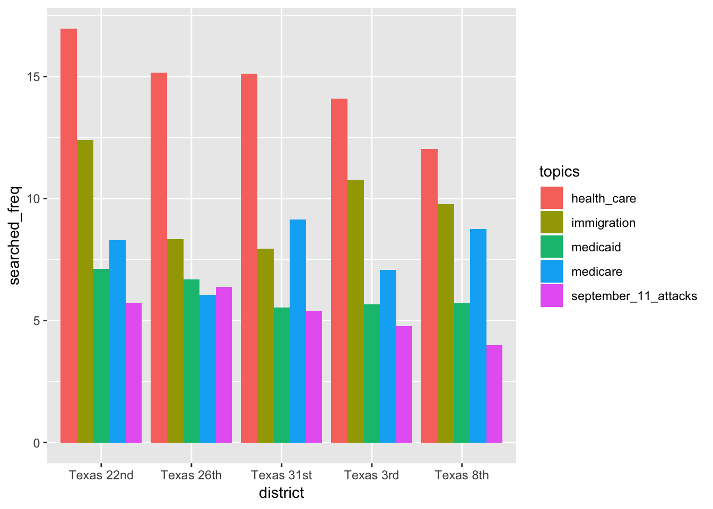
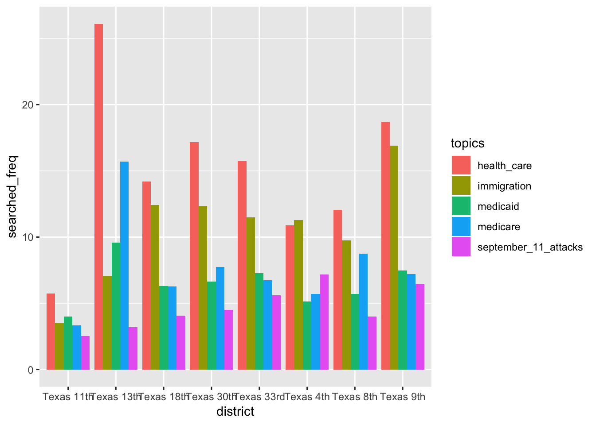
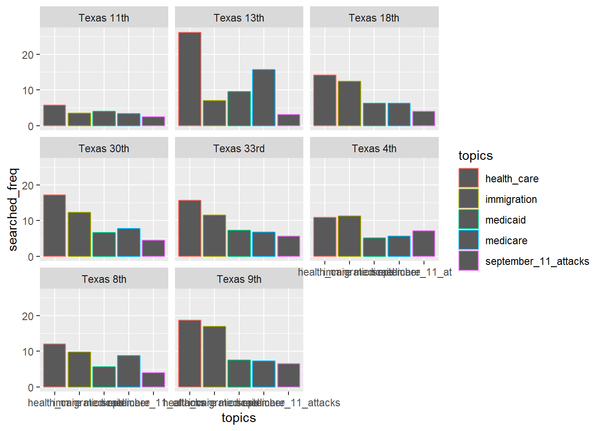
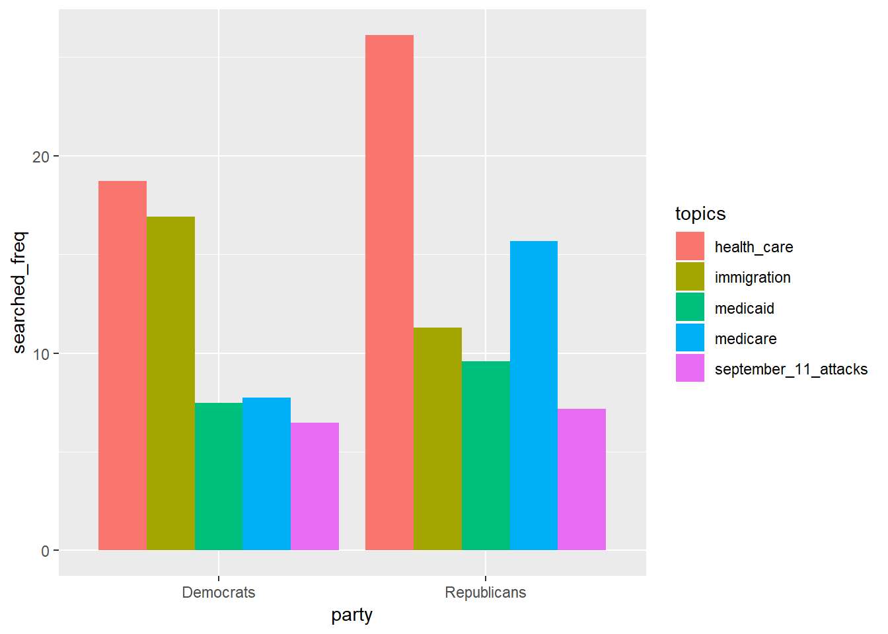
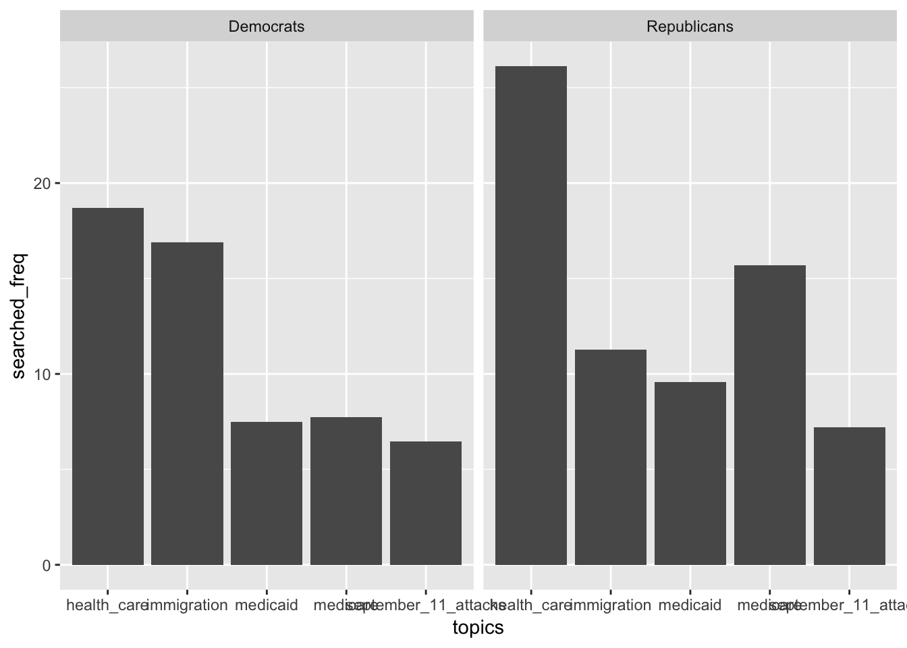

library(tidyverse)## ── Attaching packages ─────────────────────────────────────────────── tidyverse 1.2.1 ──## ✔ ggplot2 3.0.0 ✔ purrr 0.2.5
## ✔ tibble 1.4.2 ✔ dplyr 0.7.6
## ✔ tidyr 0.8.1 ✔ stringr 1.3.1
## ✔ readr 1.1.1 ✔ forcats 0.3.0## ── Conflicts ────────────────────────────────────────────────── tidyverse_conflicts() ──
## ✖ dplyr::filter() masks stats::filter()
## ✖ dplyr::lag() masks stats::lag()district_searches2 = read_csv(file = "./data/Search_Data_US_Congressional_District_26Sep2018.csv")## Parsed with column specification:
## cols(
## .default = col_double(),
## District = col_character(),
## Code = col_character(),
## State = col_character(),
## FIRST = col_character(),
## SECOND = col_character(),
## THIRD = col_character(),
## FOURTH = col_character(),
## FIFTH = col_character(),
## SIXTH = col_character(),
## SEVENTH = col_character(),
## EIGHTH = col_character(),
## NINTH = col_character(),
## TENTH = col_character(),
## `Maternity leave in the United States` = col_integer(),
## `Single-payer healthcare` = col_integer(),
## `Tax Cuts and Jobs Act of 2017` = col_integer(),
## `Transgender people in the military` = col_integer()
## )## See spec(...) for full column specifications.# Limit tx_searches dataset to only Texas rows and all the topic columns
tx_searches =
district_searches2 %>% janitor::clean_names() %>%
filter(state == "TX") %>%
select(district, x2003_invasion_of_iraq:womens_health)# Summing up the relative searched frequencies of each topic to get the 5 most searched topics in Texas
tx_searches_sum = colSums(tx_searches[,-1])
# According to the searched frequencies, the five most searched topics are:
# * health_care 509.87
#
# * immigration 357.52
#
# * medicare 270.02
#
# * medicaid 234.14
#
# * september_11_attacks 195.37 According to https://www.census.gov/mycd/, the top most populated districts in Texas are: Districts 22, 26, 3, 8, 31
tx_searches_population =
tx_searches %>%
filter(district %in% c("Texas 22nd", "Texas 26th", "Texas 3rd", "Texas 8th", "Texas 31st")) %>%
select(district, health_care, immigration, medicare, medicaid, september_11_attacks) %>%
gather(key = topics, value = searched_freq, health_care:september_11_attacks) # Stacked bar graph
# tx_searches_population %>%
# ggplot(aes(x = district, y = searched_freq)) +
# geom_bar(aes(fill = topics), stat = "identity") # Multiple bars bar graph
tx_searches_population %>%
ggplot(aes(district, searched_freq)) +
geom_bar(aes(fill = topics), position = "dodge", stat = "identity")
# Facet by the districts
# (I don't know why the bars won't change color...)
# tx_searches_population %>%
# ggplot(aes(x = topics, y = searched_freq)) +
# geom_bar(aes(color = topics), position = "dodge", stat = "identity") +
# facet_wrap(~district)Using the Cook Partisan Voting Index (PVI) as a measure (https://www.cookpolitical.com/index.php/pvi-map-and-district-list),
Created a “party” varible to identify the Democrats and Republicans districts
tx_searches_pvi =
tx_searches %>%
filter(district %in% c("Texas 9th", "Texas 30th", "Texas 18th", "Texas 33rd", "Texas 13th", "Texas 11th", "Texas 8th", "Texas 4th")) %>%
select(district, health_care, immigration, medicare, medicaid, september_11_attacks) %>%
gather(key = topics, value = searched_freq, health_care:september_11_attacks) %>%
mutate(party = ifelse(district %in% c("Texas 9th", "Texas 30th", "Texas 18th", "Texas 33rd"), "Democrats", "Republicans"))# Stacked bar graph
# tx_searches_pvi %>%
# ggplot(aes(x = district, y = searched_freq)) +
# geom_bar(aes(fill = topics), stat = "identity") # Multiple bars bar graph
tx_searches_pvi %>%
ggplot(aes(district, searched_freq)) +
geom_bar(aes(fill = topics), position = "dodge", stat = "identity")
# Facet by the districts
# (I don't know why the bars won't change color...)
tx_searches_pvi %>%
ggplot(aes(x = topics, y = searched_freq)) +
geom_bar(aes(color = topics), position = "dodge", stat = "identity") +
facet_wrap(~district)
# Stacked bar graph
# tx_searches_pvi %>%
# ggplot(aes(x = party, y = searched_freq)) +
# geom_bar(aes(fill = topics), stat = "identity") # Multiple bars bar graph
tx_searches_pvi %>%
ggplot(aes(party, searched_freq)) +
geom_bar(aes(fill = topics), position = "dodge", stat = "identity")
# Facet by the party
tx_searches_pvi %>%
ggplot(aes(x = topics, y = searched_freq)) +
geom_bar(position = "dodge", stat = "identity") +
facet_wrap(~party)
tx_all =
tx_searches %>%
select(district, health_care, immigration, medicare, medicaid, september_11_attacks) %>%
gather(key = topics, value = searched_freq, health_care:september_11_attacks) # Stacked bar graph
# tx_all %>%
# ggplot(aes(x = district, y = searched_freq)) +
# geom_bar(aes(fill = topics), stat = "identity") +
# theme(axis.text.x = element_text(angle = 90, hjust = 1))# Facet across districts showing all five searched topics
# tx_all %>%
# ggplot(aes(topics, searched_freq)) +
# geom_bar(aes(fill = topics), position = "dodge", stat = "identity") +
# facet_wrap(~district) +
# theme(axis.text.x = element_text(angle = 90, hjust = 1))# Healthcare across all districts
# tx_all %>%
# filter(topics == "health_care") %>%
# ggplot(aes(x = district, y = searched_freq)) +
# geom_bar(position = "dodge", stat = "identity") +
# theme(axis.text.x = element_text(angle = 90, hjust = 1))# Same graph by sort by searched_freq
# tx_all %>%
# filter(topics == "health_care") %>%
# mutate(district = fct_reorder(district, searched_freq)) %>%
# ggplot(aes(x = district, y = searched_freq)) +
# geom_bar(position = "dodge", stat = "identity") +
# theme(axis.text.x = element_text(angle = 90, hjust = 1))# Immigration across all districts
# tx_all %>%
# filter(topics == "immigration") %>%
# ggplot(aes(x = district, y = searched_freq)) +
# geom_bar(position = "dodge", stat = "identity") +
# theme(axis.text.x = element_text(angle = 90, hjust = 1))# Same graph but sort by searched_freq
# tx_all %>%
# filter(topics == "immigration") %>%
# mutate(district = fct_reorder(district, searched_freq)) %>%
# ggplot(aes(x = district, y = searched_freq)) +
# geom_bar(position = "dodge", stat = "identity") +
# theme(axis.text.x = element_text(angle = 90, hjust = 1))